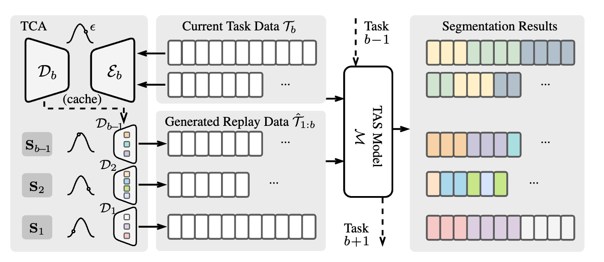

Coherent Temporal Synthesis for Incremental Action Segmentation
IEEE/CVF Conference on Computer Vision and Pattern Recognition (CVPR) 2024
National University of Singapore

Abstract
Data replay is a successful incremental learning technique for images. It prevents catastrophic forgetting by keeping a reservoir of previous data, original or synthesized, to ensure the model retains past knowledge while adapting to novel concepts. However, its application in the video domain is rudimentary, as it simply stores frame exemplars for action recognition.
This paper presents the first exploration of video data replay techniques for incremental action segmentation, focusing on action temporal modeling. We propose a Temporally Coherent Action (TCA) model, which represents actions using a generative model instead of storing individual frames. The integration of a conditioning variable that captures temporal coherence allows our model to understand the evolution of action features over time. Therefore, action segments generated by TCA for replay are diverse and temporally coherent. In a 10-task incremental setup on the Breakfast dataset, our approach achieves significant increases in accuracy for up to 22% compared to the baselines.
Video
Citation
@inproceedings{ding2024coherent,
title = {Coherent Temporal Synthesis for Incremental Action Segmentation},
author = {Ding, Guodong and Golong, Hans and Yao, Angela},
booktitle = {IEEE/CVF Conference on Computer Vision and Pattern Recognition},
year = {2024}
}